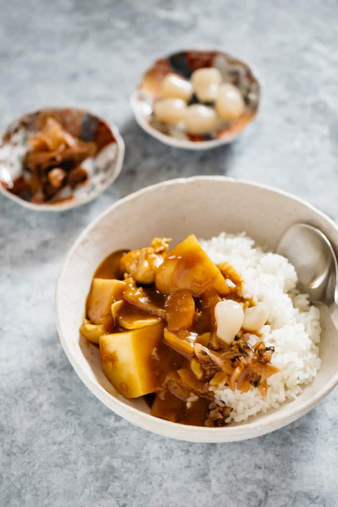

Japanese Curry Rice
Ingredients
- 1⅔ cups Uncooked rice
- ½ a large packet of Curry Roux
- 9 oz your preferred protein
- 1 brown onion
- 1 large potato
- 1 carrot
- 1 tbsp olive oil
- 2 cloves of garlic
- ¼ cup grated apple
- 1 tbsp honey
- Pinch of salt and pepper to taste
- 2 cups water approximately 500 ml
- Fukushinduke and/or Rakkyo to accompany condiments(optional)
- Worcestershire sauce(optional)
Preparation
- Start to cook rice
- Cut the meat into bite size pieces and set aside
- Peel and cut the potatoes, carrot, and onion into large bite size pieces and set aside
- Peel and slice the garlic.
- Heat olive oil in a pot over medium heat and add garlic
- When the garlic is fragrant, add the onion to cook.
- Add the chicken to cook and when they change into whitish colour, add potato, carrot, and onion and stir with a wooden spatula.
- When the oil has coated evenly on all the ingredients and the outer-edge of the potatoes have become transparent, add the water, honey, and grated apple.
- Bring it to boil and then turn the heat down to low to simmer until the potatoes become soft. and all the other ingredients are cooked. (Takes about 15 minutes)
- Turn the heat off, break the curry sauce blocks apart and add to the pot.
- Make each piece of curry roux dissolve into the cooking water in ladle with a pair of chopsticks
- Turn the heat back on low and bring to simmer to thicken the sauce.
- Serve cooked plain rice in a shallow bowl and pour the curry over the rice.
- Garnish with Fukushinduke and Rakkyo if you like. *Optional